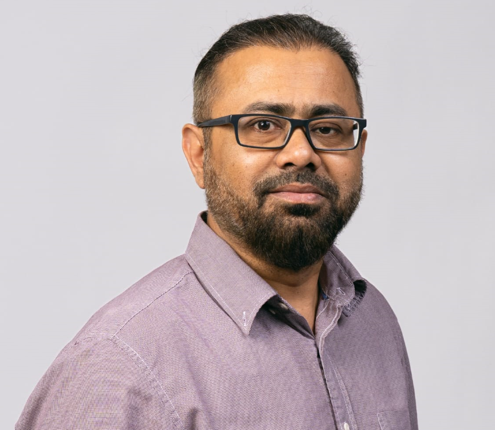

Applied AI | Generative AI | Machine Learning | Enterprise AI Adoption
Umair Ali Khan, Ph.D.
Senior AI Researcher and Consultant | Turning AI Use Cases into Validated Solutions
Helping organizations identify high-value AI opportunities and turn them into responsible strategies, validated prototypes, and deployable solutions.
Executive Summary
Senior AI researcher and consultant specializing in enterprise AI adoption and solution development. At Haaga-Helia University of Applied Sciences, I lead applied research on large language models, AI agents, workflow automation, and enterprise knowledge systems. Through the Finnish AI Region project, I have advised more than 150 companies on AI readiness, use-case prioritization, strategy, governance, and technical implementation. I combine research expertise with hands-on development of proof-of-concepts, reusable AI components, and validated solutions for real organizational workflows.
Core Enterprise AI Services
Core Areas of Expertise
Enterprise AI Adoption
AI readiness, use-case prioritization, business-value assessment, roadmaps, governance, and organizational capability building.
Generative AI and AI Agents
LLM applications, RAG systems, agentic workflows, structured extraction, and enterprise knowledge solutions.
Applied AI Solution Development
Proof-of-concepts, reusable software components, evaluation pipelines, and MVP-grade AI applications.
Research and Innovation Leadership
Applied research, funded R&D projects, industry collaboration, academic publishing, and research supervision.
Technical Expertise
Generative AI
LLM applications, RAG, AI agents, MCP, multimodal knowledge extraction.
AI and Machine Learning
NLP, computer vision, ML algorithms, evaluation, optimization.
Frameworks and Platforms
PyTorch, TensorFlow, scikit-learn, LangChain, LangGraph, LlamaIndex, OpenAI and Anthropic APIs.
Development and Deployment
Python, FastAPI, React, REST APIs, Docker, cloud deployment, evaluation pipelines.
AI Consultancy & Industry Impact
AI Consultant
Finnish AI Region (FAIR) Project | Haaga-Helia University of Applied Sciences
- Advised more than 150 companies on AI use-case selection and prioritization, business-value assessment, implementation planning, technical development, and adoption risks.
- Conducted AI needs and maturity assessments that helped companies prioritize feasible use cases, identify data and capability gaps, and define concrete implementation steps.
- Developed company-specific AI roadmaps covering use-case sequencing, data readiness, technology selection, internal capabilities, governance, and implementation priorities.
- Guided technical teams on AI/ML models, data strategy, generative AI, RAG systems, AI agents, and regulatory considerations.
- Built proof-of-concepts and MVP-grade AI/ML solutions for more than 20 companies, enabling them to validate use cases, assess feasibility, and support investment decisions.
Research & Projects
Senior AI Researcher
Applied AI & Knowledge Systems | Haaga-Helia University of Applied Sciences
- Lead applied research on generative AI, AI agents, and enterprise knowledge management, focusing on knowledge capture, extraction, access, and generation for real-world business applications.
- Design and develop reusable AI frameworks, software components, and enterprise AI solutions for knowledge extraction, multimodal document understanding, and workflow automation.
- Collaborate with industry partners to convert business challenges into validated AI solutions, prototypes, and deployment roadmaps.
- Secure and lead EU, regional, and international research and innovation projects from proposal preparation through implementation and stakeholder engagement.
- Supervise master's and undergraduate theses, publish peer-reviewed research, and contribute to AI education, technical mentoring, and knowledge dissemination.
Selected Research & Innovation Projects
Finnish AI Region (FAIR)
European Commission · Business Finland · City of Helsinki
AI consultancy, enterprise AI adoption, AI readiness, roadmaps, and proof-of-concept development for Finnish organizations.
Generative AI Enhanced Knowledge Management in Business (GAIK)
European Regional Development Fund (ERDF)
Research and development of enterprise generative AI frameworks, AI agents, structured knowledge extraction, and RAG-based knowledge management solutions.
Professional Experience
Professor
QUEST University, Pakistan
Associate Professor
QUEST University, Pakistan
Research Scientist
Fraunhofer IIS, Germany & MTA SZTAKI, Hungary
Assistant Professor / Lecturer
QUEST University, Pakistan
Education
Ph.D. in Information Technology
Alpen-Adria University, Klagenfurt, Austria | 2013
Research focus: machine learning-based dynamic energy management for embedded and networked systems.
Master's Degree in Information Technology
Alpen-Adria University, Klagenfurt, Austria | 2010
Machine learning and optimization.
Bachelor in Computer Systems Engineering
QUEST, Pakistan | 2004
Programming, database design, and embedded systems.
Leadership
Chairman, Artificial Intelligence Department
QUEST University
Chairman, Computer Systems Engineering Department
QUEST University
Director, Research & Publications
QUEST University
Selected Publications
Kudryavtsev, D.; Khan, U.A.; Remes, J.; Kauttonen, J. (2026). From Collaboration to Toolkit: Applying eDSR in a Generative AI Knowledge Management Project.
Design Science Research (DESRIST 2026), Lecture Notes in Computer Science, Springer. DOI: 10.1007/978-3-032-28570-6_23
Alamäki, A.; Khan, U.A.; Lagstedt, A. (2025). Ethical Considerations in the AI Lifecycle for Design, Developing and Adopting AI in Public Sector – the Case of Finland.
International Journal of Information Systems and Project Management, 13(4), Article 2. DOI: 10.12821/ijispm130401
Khan, U.A.; Kudryavtsev, D.; Kauttonen, J. (2025). AI Adoption in Finnish SMEs: Key Findings from AI Consultancy at a European Digital Innovation Hub.
Proc. IEEE 23rd World Symposium on Applied Machine Intelligence and Informatics (SAMI 2025), Stará Lesná, Slovakia, pp. 465–470. DOI: 10.1109/SAMI63904.2025.10883271
Alamäki, A.; Khan, U.A.; Kauttonen, J.; Schlögl, S. (2024). An Experiment of AI-Based Assessment: Perspectives of Learning Preferences, Benefits, Intention, Technology Affinity, and Trust.
Education Sciences, 14(12), Article 1386. DOI: 10.3390/educsci14121386
Khan, U.A.; Xu, Q.; Liu, Y.; Lagstedt, A.; Alamäki, A.; Kauttonen, J. (2024). Exploring Contactless Techniques in Multimodal Emotion Recognition: Insights into Diverse Applications, Challenges, Solutions, and Prospects.
Multimedia Systems, 30(3), Article 115. DOI: 10.1007/s00530-024-01302-2
Khan, U.A.; Martínez-del-Amor, M.Á.; Altowaijri, S.M.; Ahmed, A.; Ur Rahman, A.; Us Sama, N.; Haseeb, K.; Islam, N. (2020). Movie Tags Prediction and Segmentation Using Deep Learning.
IEEE Access, 8, 6071–6086. DOI: 10.1109/ACCESS.2019.2963535